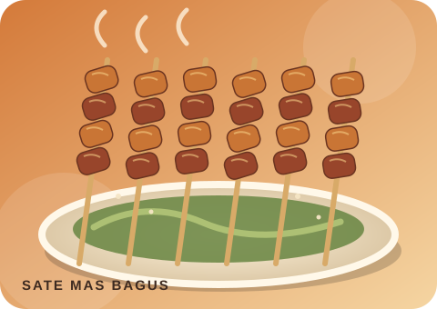

Rasa yang jelas
Setiap menu memiliki deskripsi dan karakter bumbu yang mudah dikenali.
02 / CERITA KAMI
Sate Mas Bagus hadir sebagai konsep warung sate yang merayakan pilihan rasa, racikan bumbu, dan momen makan bersama.

EST. 2026TENTANG SATE MAS BAGUS
Sate Mas Bagus merupakan konsep UMKM kuliner yang berfokus pada sajian sate dengan beberapa pilihan daging, yaitu sapi, ayam, kuda, dan kelinci. Setiap menu dirancang dengan karakter bumbu yang berbeda agar pengunjung dapat memilih rasa sesuai selera.
Identitas warung dibangun dengan suasana sederhana dan hangat: aroma panggangan, sajian yang disiapkan ketika dipesan, serta menu yang mudah dipahami.
PEGANGAN KAMI
Nilai yang menjadi dasar konsep pelayanan Sate Mas Bagus.
Setiap menu memiliki deskripsi dan karakter bumbu yang mudah dikenali.
Konsep penyajian mengutamakan sate yang baru dipanggang.
Menu dan suasana dirancang untuk dinikmati bersama.
DI BALIK PANGGANGAN
Susunan pengelola berikut merupakan data contoh untuk kebutuhan proyek.
Mengelola konsep dan operasional warung.
Menyiapkan dan memanggang pesanan.
Membantu pelayanan dan penyajian menu.
WAKTU BERTEMU
Jam operasional pada tabel berikut merupakan data simulasi dan dapat disesuaikan dengan jadwal usaha sebenarnya.
| Hari | Jam buka | Jam tutup |
|---|---|---|
| Senin – Jumat | 16.00 WIB | 23.00 WIB |
| Sabtu | 16.00 WIB | 23.00 WIB |
| Minggu | 16.00 WIB | 23.00 WIB |